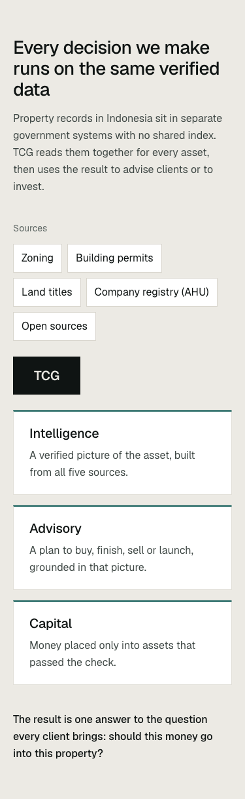
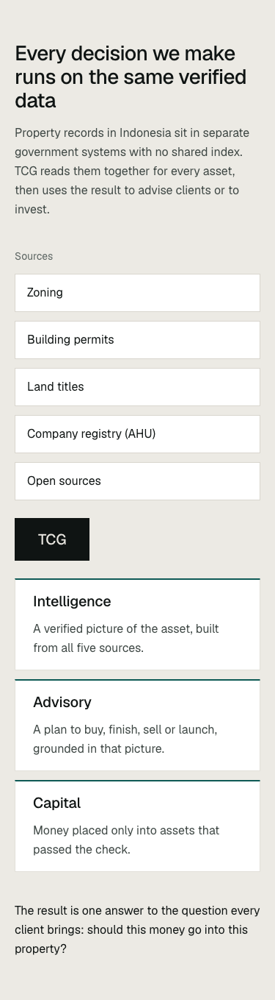
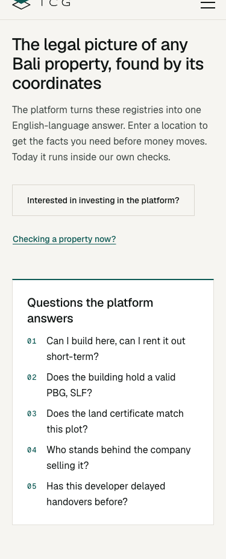
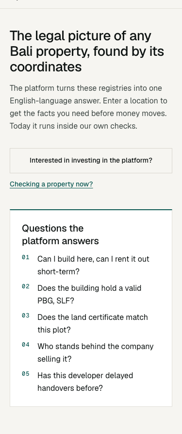
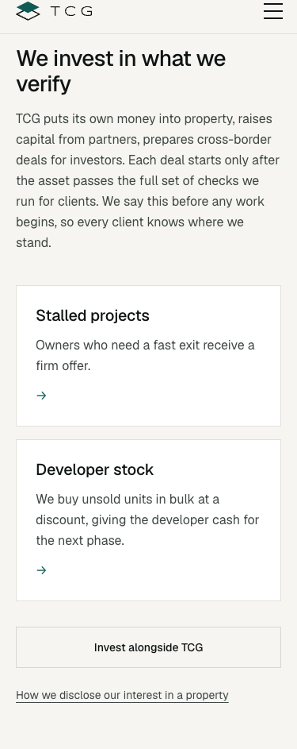
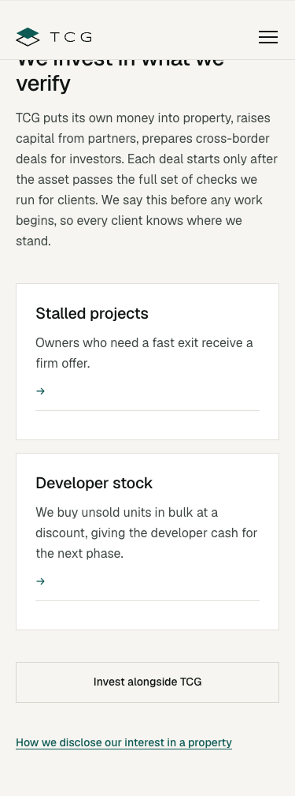
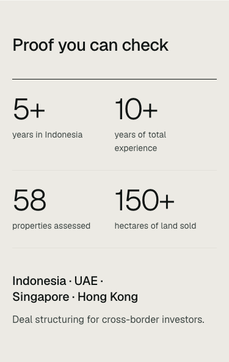

home at 375px: 59b022f (left) and now (right)
Verified data, capital access and development strategy for property in
Every decision we make runs on the same verified data A1
59b022f
now
The legal picture of any Bali property, found by its coordinates A5
59b022f
now
Experience from both sides of Indonesian property deals
We invest in what we verify
59b022f
now
Proof you can check
59b022f now
now
Government Authorities & Regulatory Bodies
59b022fnow
Start where you are A3A4
59b022fnow
Ask us anything about your property
59b022fnow